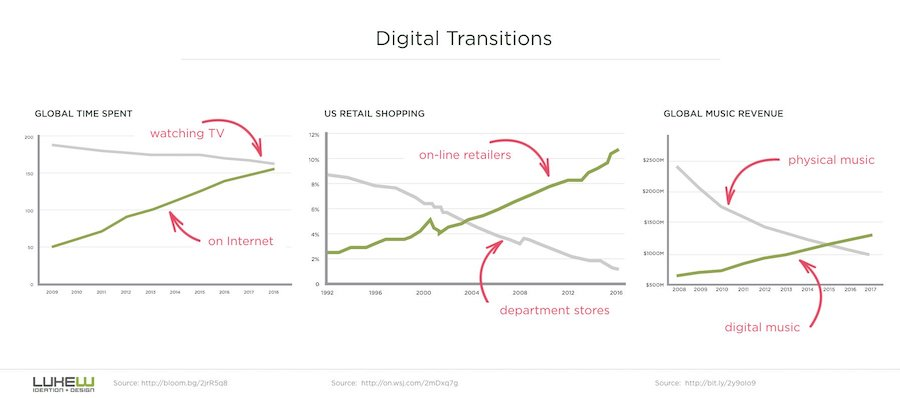

Reading Overview
In this chapter we focus on the intangible components of any computer system: software. A solid understanding of the different kinds of software and how software is created, is crucial for you to become a sophisticated end-user. As a manager in your future career, you may never be called upon to make decisions about hardware. But you will definitely be involved in software decision-making. Thus, a solid understanding of software and the issues associated with it, is crucial for you. Specifically, this chapter will help you to:
- Define what software is, and be familiar with the different classes of software in use today.
- Define what an interface is, and be familiar with the different types of interfaces in use today.
- Become familiar with the process of software creation.
- Be able to define what an algorithm is and be familiar with the different types of programming languages in use today.
- Understand the underlying logical structure of modern software applications.
Introduction
This chapter focuses on software in both the personal computing and organizational computing contexts. Most of you will only be marginally involved with computer hardware and hardware decisions. While you must be an informed buyer of hardware for your personal use, you will most likely never be involved in hardware decision in your job. Conversely, as an end-user and one day as a manager, you can expect to be involved in software decisions both at a personal level and as part of your job. If you decide to make a career in Information Systems, you will partake in the management of software, you may become a business analysts and join the team tasked with digitizing your firm's business processes and operations. For example, you may join a bank that is considering using Apple Pay and you may work on that project.
The bottom line is that, even if you are not directly involved in information technology decisions as part of your formal role in your organization, as a future knowledge worker you will never be too far from decisions about software. After all, if you join the marketing organization should you not be involved in selecting or developing the sales software that will help you be more productive? If you become a financial analyst, should you not be involved in purchasing or customizing the financial analytics software you will be required to use? If you become a doctor, would you not want to be involved in decision about computerized patients records or artificial intelligence software designed to help you improve your diagnoses?
This chapter covers the critical concepts you must master to make good software decisions in your career. The better you understand software foundations the more knowledgeable you will be and the more confident you will be in participating in critical decisions for your firm and for yourself. This chapter will address three major areas of knowledge. What are the different types of software in a modern computer system, and what is the structure of these software programs? How is software created? What are the major categories of enterprise software found in modern organizations?
What is Software?
Software is the intangible component of any digital computer system. It is best understood in contraposition to hardware– the tangible component of a digital computer system. If you were asked to point to the keyboard of your laptop or the touch screen of your smartphone, you could easily do so. If we asked you to give us the memory cards or the CPU of your laptop or smartphone, it would be a bit harder since you’d have to break open your device, but you could do so. But what if we asked you to give us your copy of Microsoft Word or tell us the weight in pounds of your copy of Microsoft Excel? Or what about the latest Snap Story you have received from your best friend on your smartphone. Could you do so? No, those are not tangible components that you can touch or grab. Certainly you could share that Snap Story with us, but you'd be making a copy, not physically grabbing it and giving it to us - the way you could with hardware components. Software, comprised of software programs and data, is intangible.
Software programs, like macOS, Windows 10, Microsoft Excel, Android, iMessage or Snapchat, are the set of instructions which govern the operations of a digital computer. In other words, a software program is software that enables your digital computer to perform some tasks or actions, such as play a movie or compute the average of ten numbers. Data is encoded information that is used by software programs. Thus, while software programs enable actions, data files are used by software programs to perform those actions. Examples include the latest report you wrote using Microsoft Word, the pictures from your vacation in the Greek islands, and the 2500 songs stored in your iPod. Data files are generally stored with a name and an extension (e.g., report.docx, template.dotx, image.gif). In the standard convention, the file name is before the dot and the file extension occurs after the dot. The file extension is very important metadata that specifies the type of data stored in the file. The file extension is typically associated with a specific software program that will be able to manipulate the file.
In the previous chapter, we discussed the stored program concept. The design model at the heart of modern digital computers implicitly recognizes the importance of software. It is clear to us that hardware is useless without software. More formally, until the instructions that govern the operations of your computer, and the input data, are loaded into primary memory and passed to the CPU for execution, no output is produced. Those instructions and the needed data are the software components of your computer system.
Early in the history of computing, software was developed by hardware manufacturers because instructions were specific to the hardware. There were no standardized instructions set and programmers needed deep knowledge of the CPU architecture and acceptable operations to create working software programs. But with the advent of the personal computer in the 1980s and the standardization of hardware architectures, an independent software industry emerged. Today, the software industry dwarfs the hardware industry in terms of size and profits (Figure 1).
From the standpoint of the end-user there are three major types, or classes, of software programs. They are the operating systems, system software, and software applications.
Operating System
When you turn on your computer, after preforming some basic hardware checks to ensure that everything is in working order, the Operating System (OS) is loaded into memory and its start-up instructions are executed by the CPU. You can see this happening as the screen turns on and a progress bar shows you the advancement of this loading process. Once it is complete you are generally prompted to authenticate and the desktop appears with the available icons. Your computer is now ready to work for you. The fact that you can’t do any work until the operating system gives you the ability to do so, should convince you that the OS is the most important software program in your computer system. In fact, it is so important that it deserves a category all its own. But why is the operating system so important?
The Operating System (OS) is the software program that manages a computer system and its operations. It contains the instructions necessary to:
- Allocate and assign system resources.
- Schedule access to system resources.
- Monitor system activities.
In managerial terms, you can think of the OS as the Chief Executive Officer (CEO) of the computer system. Like a boss, it allocates and assigns system resources. For example, when two programs need to access memory, they make requests to the OS which decides if and how much memory to allocate to each one. If you are trying to open a file (a type of resource on the system), it will be the OS to decide whether you should be allowed or not to do so. It may also decide, based on the file extension of your data file, which applications to start for you.
Like a traffic cop the OS schedules the use of the resources of the computer system amongst the potential users. Note that here the term “user” may refer to people wishing to use the system but more often it refers to different applications seeking to use components of the computer system. For example, two applications may be trying to print. It is the OS that regulates which application will be allowed to send its print job to the printer first. The other one must wait in the print queue. Or maybe your email and your browser are both trying to send data through the Wi-Fi radio. It is the OS that will schedule access to this resource and manage these competing interests.
Finally, like an attentive parent the OS monitors the system’s activities. This monitoring is important to spot problems and to ensure smooth and efficient operations of the computer system. Imagine that your computer experiences a disk failure. Unless the OS monitors the system, you may continue to save your work and only later realize that nothing was retained by the damaged disk. System monitoring is also important to ensure that idle time of resources is minimized.
Every modern digital computer system has an operating system. Some of these you surely know, like Windows or macOS for your laptop, iOS and Android for your smartphones and tablets. Some others may be more obscure to you, like Linuxand Unix, the dominant operating systems for servers and supercomputers. A version of the Linux operating system manages the core computing assets of Tesla cars. In a Tesla you interact with the computer through the giant touch screen near the driver (Figure 2). The Amazon Echo, another digital computer that does not look like a computer, instead uses a modified version of the Android OS.
The most visible role played by the OS is to interact with you, the end-user. If you think about it you can probably mention dozens of tasks you perform working directly with the OS. Simple examples range from something as mundane as copying files from the hard disk to a portable flash drive, to something as complex as partitioning your hard disk and encrypting part of it. Whether simple or complex, any task that requires you to interact directly with the operating system is devoted to managing your computer system. These are activities you would not have to engage in if you did not have a computer. For example, setting the privacy controls on your smartphone (Figure 3) is something you would no longer have to do if you lost your device.
Software Applications
Applications represent the broadest class of software programs, and the one you are most familiar with as an end-user. In fact, the ability to use one or more software applications is the reason why you purchased a digital computer in the first place. If you are the serious type, you may have purchased your computer to write reports in Microsoft Word or preform analyses with Microsoft Excel. If you are a “news junky,” most likely you bought it to navigate the World Wide Web with a browser such as Apple Safari or Google Chrome. If you think that work is overrated and you don't care about the news, you probably purchased your computer to communicate with friends via Skype or to watch Netflix original series. In fact, this is a false choice, you probably do all three things with your computer – once again showing why we say that digital computers are general purpose machines and conceptually proving once again the brilliance of the stored program concept.
Formally, software applications are those software programs designed to enable users to perform an activity they would perform without a computer. If you did not have a computer you would still have to write reports for class, you would still want to communicate with your friends, and you would still like to have some entertainment. Even though you could not use Word, Skype or Netflix. While it is easiest for you to think about software application in the context of your own activities, you recognize that the same applies to organizations. Your university uses software to enables professor-student communications (e.g., Moodle), it uses software to enables employees to review their paychecks (e.g., Workday) and it uses software to process grades at the end of the semester. These are activities that the university would have to perform even if it did not own computers, and in fact universities performed these activities well before the advent of digital technology.
Software applications that perform related tasks and may be used in the same context are often bundled together in software suites. The preeminent example of a software suite is Microsoft Office, which combines a word processor (Microsoft Word), a spreadsheet (Microsoft Excel), presentation software (Microsoft Power Point) and an email client (Microsoft Outlook). Together these applications make up the Microsoft Office suite of productivity tools – a bundle that has enable Microsoft to dominate office computing for the last three decades.
System Software
System software, also called utility software, is a category referring to all those software programs that you would not need if you did not have a computer. Mind you, this does not mean that system software is not useful. It simply means that system software, like the operating system and unlike software applications, is designed to help users ensure optimal operations of computer systems. System software programs are designed to perform one of the following tasks:
- Extend the functionality of the operating system.
- Provide specific system management functionality.
- Provide the facilities for software development.
A classic example of software that extends the functionality of the operating system is a device driver. A device driver is a software program containing the instructions needed to manage a specific device. Modern operating systems are “plug and play.” This means that they are able, right out of the box, to manage the many peripherals you may connect to your computer: printers, DVD players, external monitors and the like. However, what if you purchase a device that was not in production when your operating system was written? What if the manufacturer of the device did not have business relationship with your OS provider? What if the new peripheral you purchased is a new Kickstarter project? In all these cases your operating system, which oversees all the resources in your computer system, would not be able to manage the new peripheral. The solution is to download the device driver from the manufacturer and install it. The device driver will complement your operating system and extend its functionality so as to enable it to work with the new device.
Often system software provides management functionalities that exceed those provided by the operating system. For example, Windows comes with a firewall and an antivirus. However, many users feel the need to invest in standalone security software from established providers, like Symantec. Another example of system software of this kind was heavily in the news during the 2016 America Presidential election. Hillary Clinton was accused of deleting some emails. However, she, or her staff, knew that deleted files can be recovered from a computer’s secondary memory. To be sure that a file is unrecoverable the user must run special purpose software. In the specific case of the Clinton staff apparently, they used a free utility called BleachBit. Other examples of system software of this kind include compression utilities (e.g., WinZip) or disk cleaning utilities.
A final category of system software is comprised of those software programs that enable professional users to manage computer infrastructure or enable them to create new software. For example, if you ever learn to program (which you should!) you will probably use an Integrated Development Environment (IDE) to organize your work. An IDE makes it easier to manage a programming project by providing a code editor, simplifying the management and organization of your files, offering utilities for testing and debugging your code, and the like.
User Interfaces
How do we interact with the operating system? Or any other element of our computer system? We do so through the user interface. The term interface is very general; it refers to the point of contact between two systems or two components of a system. That means that there are all kinds of interfaces, and not just in computing. For example, in a work environment it is very common for some employees to serve as the interface between two departments. Those are the individuals that ensure that information flows across organizational units. A user interface is the point of contact between a human (the user) and the computer system. As pictured in Figure 3, you perform the task of changing privacy setting by touching a toggle button, on or off, to allow or not specific smartphone apps to track your location. It is the user interface that enables you to visualize the task and issue the correct action to your smartphone. There are four major types of user interface: Command line interfaces, menu-driven interfaces, graphical user interfaces and conversational interfaces. We present them in chronological order as they developed over time. However, as you will see in many aspects of computing, older technologies and paradigms rarely disappear completely. Today you probably find yourself using all four types of user interfaces at different times in your computing experiences.
Command Line Interface: There isn’t much creativity in technology names. Computer folks normally name things based on what they do. Thus, a command line interface is one where the user types instructions (i.e., commands), on a specific line, in response to a visual prompt (Figure 4).
The interaction with the computer happens as a sequence of textual commands issued by the user and responses by the computer who, when ready to receive the next command, displays the visual prompt. Command line interfaces where the first type of interfaces in general use in computing because they are very “lean.” As you learned when studying hardware, text is not computationally intensive to process and to display. This made command line interfaces feasible on early generation of digital computers, despite their limited computational power. Today command line interfaces are still in widespread use. In fact, Figure 4 was shot on my 2016 MacBook Pro. While they are the hardest to learn for end-users, command line interfaces are preferred by computer professionals because they are efficient, offer a fine-grained degree of control and can be chained into scripts that are particularly useful for automating recurrent activities.
Menu-driven Interface: Menu-driven interfaces, as the term suggests, are those where users interact with predefined menus of commands. Unlike command line interfaces, where the end-user must remember the commands and type them correctly for the computer to be able to process them, a menu-driven interface prompts the user with a choice of available commands. You are surely familiar with menu-driven interfaces in Microsoft Office or your Web browser. In those applications, there are tens, maybe hundreds, of menu options. Thus, user interface designers have cleverly organized them in submenus (Figure 5) and contextual menus that change depending on the objects currently selected. While you may be most familiar with menu-driven interface on your laptop, they are available on many different types of digital computers. For example, ATMs use them, as did the first few generations of the iPod, and many feature phones still commercialized today (Figure 6).
Graphical User Interface: By far the most popular user interface in use today is the Graphical User Interface (GUI). A GUI allows you to interact with your computer system by manipulating small images, called icons, on the screen (Figure 7). On your laptop, you do so by pointing and clicking on them with your mouse or the magic track pad. In a tablet or smartphone, equipped with touch sensitive displays, you manipulate icons by directly touching them. As you know, a tap will open an app on your smartphone. GUIs are a further step in the progression of user interfaces becoming more intuitive and easier to use. In fact, the original design of the GUI carried out at Xerox PARC and later by Apple with the release of the Macintosh personal computer in 1984 was explicitly built on a metaphor that would be familiar to the end-user. To this day the working space on your screen where icons reside is called the desktop, files are organized into folders and so on. Sounds familiar? Your computer GUI is built on the familiar metaphor of an office. Your ability to move windows on top of one another is mirroring what happens on a physical desktop when you organize your paper files.
While you probably take graphical user interfaces for granted and you have not given much thought about them until today, you should appreciate that it is considerable more computationally taxing for a digital computer to produce graphics for you to manipulate and move around on the screen, than it is for it to manage a command line interface. This is the reason why GUIs did not become feasible until the emergence of personal computers – machines with enough local computing power to manage GUIs and still perform the work the user needed to do.
Conversational Interface: What would be the last step in the evolution of increasingly user friendly computer interfaces? Well, nothing would be simpler than being able to speak to the computer in natural language and simply request a task to be performed: “Computer, please install a spyware filter,” “computer, please move my report to the flash drive.”3 While this level of freedom is not supported by any modern interface, conversational interfaces target this goal. Conversational interfaces, whether verbal or written, allow users to interact with a computer through natural language. A verbal conversational interface is implemented in the Amazon Echo and in digital assistants such as Apple Siri and Microsoft Cortana. Text based conversational interfaces are implemented in chat bots, like Google Messages.
In this section, you have learned about the four major types of user interfaces in use today. More fundamentally, we discussed the trade-offs of ease of use and control each one of them creates. An intriguing conclusion from this discussion is the idea that digital computers are one of the few modern artifacts that become easier to use, as they become more complex internally. This is a direct byproduct of Moore’s law. As computer engineers create more and more intricate microchip designs, digital devices become more powerful and can contribute to bridge the communication gap inherent in the relationship between humans and computers (Figure 8). As computational power increases the device can process more instructions in the same amount of time and, therefore, it can manage more computational intensive user interfaces that make life easier for us. It should not be lost on you that this offloading of more work to computers engenders the ability for more and more people to benefit from computing.
The following short video, describing the genesis of the iPhone virtual keyboard in 2006. It should highlight for you how many elements a new user interface must address – ease of use, accuracy, responsiveness. If the above video piqued your interest, you should watch the whole interview at.
Platforms
Like the term interface, the word platform can have multiple meanings. The English dictionary defines a platform as “a raised level surface on which people or things can stand.” In other words a platform is a surface that gives support to other things. In its most general technical connotation in the context of computing, the term platform refers to the environment in which a software program is executed. Platforms are important because software programs will work only on the platform for which they were designed. Thus, when we use the term platform in the context of hardware we are generally referring to CPU architectures. For example, Intel and ARM are the two dominant microchip architectures for modern digital computers. The operating system is also often referred to as the platform for software applications. For example, a software program written to run on the Windows platform will likely run on various versions of Windows – Windows 7, Windows Vista or Windows 10. But it will most definitely not run on a Macintosh or a computer running Linux. Microsoft Office for example, has been developed for both Windows and macOS, and the two versions do not have the exact same functionalities – a frustrating fact for any instructor teaching Microsoft Word and Excel!
The manner in which an operating system acts as a platform for software applications is very structured. The OS exposes Application Programming Interfaces (API). APIs are protocols that regulate how a software application should structure requests for using external resources. As we mentioned earlier an interface is the point of contact between two systems or the components of a system. Thus, an API is the point of contact between an application program and some external resource – in this case the operating system.
In the context of digital computer no software program can directly access the system’s resources. Rather it must make requests to the operating systems. If an application wants to print some text, it cannot contact the printer directly but rather it must pass the information to the operating system, which will in turn issue the print job. If an app on your smartphone needs to play a sound through the speakers, it must make a structured request to the operating system. Those requests are made following a specific syntax and set of rules that are specified by the APIs.
In the 90s and early 2000s, when Apple almost went bankrupt, the Wintel platform was the only game in town. Wintelreferred to personal computers with the Intel microprocessor as the CPU, running the Windows operating system. Today the dominant platforms running on smartphones and tablets are the iOS platform, for Apple devices, and the Android platform upon which all apps that run on non-Apple devices such as Samsung, Huawei or Motorola are built.
The Logical Structure of Software Applications
One of the underlying themes of this book is the idea that to be a sophisticated end-user, a functional member of the global community living in the information age, you need not learn an inordinate amount of specific information about computers and digital computing systems. Rather, you need to thoroughly understand a few basic concepts that underpin digital technology and computing. These concepts don’t change, even as information technology seems to evolve at lightning speed. One such concept is the logical structure of software applications.
We have established earlier that software applications are software programs designed to support end-users in performing useful tasks – tasks they would want to perform even without a computer. There have been millions of applications created since the stored program concept was introduced in the 1940s. In fact, as of January 2017 there were 2.2 million unique applications in the Apple App Store alone! However, these millions of applications have the exact same logical structure. They all have the same three components: The Presentation Layer, the Logic Layer and the Data Management Layer. Data storage technology changes, programming languages advance, user interface paradigms evolve, but if you are buying (or building) a software application, you know it will have three major components:
· The Presentation Layer: Also known as the user interface layer, it contains instructions specifying how the user interface should look and operate. For example, the instructions determining where to place menus on the screen or how to handle speech recognition belong in this layer. Instructions in this layer will also determine what input the app will accept, in what format and what kind of input validation may be performed.
· The Application Logic Layer: Contains instructions specifying the functionalities of the software program. This layer uniquely defines the application’s characteristics. For example, while Microsoft Word and PowerPoint share many of the elements of the user interface, their functionalities are significantly different.
· The Data Management Layer: Contains instructions specifying where and how to store the application’s data as well as how to search for it, retrieve it and secure it.

Modern programming approaches enable the physical separation of the three components of a software application. However, whether physically co-located or not, all three are required for the application to work and deliver useful functionalities to the end-user.
The Creation of Software
You use software for many hours every day. Recent studies show that millennials use the Internet far more than they watch television. According to Nielsen people between the ages of 18 and 24 spent 35% less time watching TV in the second quarter of 2016 as compared to the same quarter of 2010.

Your smartphone is your TV, and your TV is made of software (e.g., YouTube, Snap Stories). You spend hours using software every day, and if you have an iOS device the system will now give you reports on how much screen time you get. But have you ever wondered how software comes to be? Have you ever wondered what it takes to design and develop a popular app like Instagram? If you have never programmed or given a second thought to how software is made, here is your chance to learn.
Algorithm Design and Coding
We have already established that a software program is the set of instructions that govern the operations of a digital computer. Programming is the art and science of writing software programs. Programming is a distinctly human activity that involves problem solving and creativity. As Steve Jobs liked to say, the computer is like a bicycle for the mind. Nowhere is this complementarity between humans and digital computers more apparent than in programming. Writing a software program requires a clear understanding and specification of the problem at hand. For example, a program designed to compute the average of an arbitrary set of numbers will have very different requirements and specifications than the program designed to enable group video conferencing, or a program designed to challenge you at the game of chess.
Once the problem is well specified, software engineers use their knowledge and creativity to design the most efficient way for the program to accomplish the task. With a problem solution at hand, software programmers can code the instructions that will enable the computer to carry out the task. Thus, more formally, the creation of software requires two distinct activities: Algorithm design and coding.
Algorithm Design
Algorithm is not a computing term. Broadly speaking an algorithm is a procedure or formula for solving a problem or achieving a result. The procedure is comprised of a set of rules defined in a finite number of steps. By this definition your plan to beat the rush hour by deciding the quickest route to get to work in the morning is indeed an algorithm. A recipe for your favorite dish (mine is Lobster Catalan in case you are wondering) is also an algorithm. With the widespread adoption of digital computers, the term algorithm has come to be almost completely equated with “software algorithm.”
“The word algorithm has an unusual backstory. It seems the 9th Century Persian mathematician Al-Khwārizmī wrote about calculations, and when his work was translated into Latin 300 years later, his name was somehow incorporated into the name of the process as Algoritmi. This got confused with the Greek word for number, arithmos, leading to the evolution of the word as we know it. It's a mish-mash, ironic for a word that stands for a rather rigid set of rules.” [ref]
Algorithms are particularly central to computing because, as you know, digital computers are unable to deal with much ambiguity. Thus, while algorithms are pervasive in our lives, when it comes to software programming, precision in algorithm design is critical. Thus, even a simple program designed to compute the average of N numbers will require a very precise algorithm. It may be something like this:
- Ask the user how many numbers she would like to average
- Store the number as N
- Elicit from the user the first number to be averaged
- Store the number in memory
- Repeat step 3 and step 4 N times
- Sum the N numbers and store the result as S
- Divide S by N and store the result as R
- Print R to the screen
A few things to note: While the task of averaging N numbers is trivial, it has to be very precisely specified for the computer. This requirement of precision easily makes all but the simplest software programs, very long. That’s why software applications that you use every day have millions, sometimes billions, of lines of code (Figure 8). There are many different ways (i.e., algorithms) to produce the same result – a concept known as equifinality. While there are many different possible algorithms for the same task, there are generally a small set of efficient ones, putting a premium on algorithm design skills. Algorithm design is the activity of envisioning and specifying the set of steps the computer must perform to produce the expected output. So, while you probably always equated software creation with coding, you now know that the most important, and most difficult, aspect of programming is algorithm design.
The algorithm for averaging N numbers is pretty trivial, but software programs become long and complex very quickly. The reason is that most programming tasks are not trivial. This video shows how difficult it is to create an algorithm that makes something like a car crash look realistic.... I particularly love the "ballet of cars" up in the air... funny, but not realistic!
Coding
Once a solution to the problem has been designed, the algorithm is ready, it is time to translate it into instructions that a digital computer can process. This is the coding phase of software development. In this phase the algorithm is written as a set of precise instructions for the computer to execute, using a specific programming language. The resultant is the software program.
Note that coding is a general term that people often use as a loose substitute for the term programming. To grasp the subtle difference, considere that you could be "coding" without being "programming". Many of you have experience with creating webpages using the HyperText Markup Language (HTML). HTML in not a programming language, rather it is a markup language. As a markup language, it encompasses a set of codes that you would use to instruct a broweser (e.g., Google Chrome) on how to render, or display, a web page. When you are writing HTML code, you are indeed coding. However, you are not programming. The key difference being that you don't have to devise an algorithm to create a web page. You don't need to specify what the computer should do, but only what you want the computer to display. In other words, coding in HTML is very similar to creating documents with Microsoft Word.
Try your hand at coding in HTML right here: Intro to HTML from W3C.
Programming Languages
When we introduced the concept of user interface, we framed the problem as the bridging of a communication gap between humans and machines. Digital computers, for as advanced as they may be, only understand electrical impulses. Those electrical impulses are abstracted for our benefit as binary digits, but they are still very distant from our natural language – English, Italian or Chinese.
The same “communication gap” applies to programming, where the objective is to instruct the computer on how to perform a task. Fortunately, over the six decades that digital computing has evolved, a set of programming languages characterized by increasing levels of abstraction have helped insulating software designers and engineers from the more tedious aspects of programming (Figure 10). To abstract means to disassociate from a specific instance. We identify four levels of increasing abstractions in programming languages, generally known as generations. They are:
- First generation – Machine Language
- Second generation – Assembly Language
- Third generation – High Level Languages
- Fourth Generation Languages
We will discuss each one in turn to provide you with the appropriate vocabulary and to show you the benefits and challenges of increasing levels of abstraction in software coding.
Machine Language
When we studied computer hardware, we learned that each microchip has a specific hardwired instruction set. To each of the instructions in the instruction set corresponds a circuitry made of transistors that executes a predefined operation (e.g., an addition, a division, a comparison of two numbers). The language that maps directly to the instruction set for any given CPU is called machine language. It follows that machine language is the lowest possible level of programming abstraction, requiring the programmer to code using instructions that are directly understandable to the CPU. A program written in machine language is a sequence of binary or hexadecimal codes that can be directly input to the CPU for execution. Machine language is hardware specific, being unique to a microchip or a family of microchips sharing the same instruction set.
Being the lowest level language in the abstraction hierarchy, machine language also requires programmers to write code that explicitly addresses available resources. Thus, to retrieve data from a specific memory cell in RAM, a programmer needs to specifically address the location for each operation using the sequence of bits understood by the CPU.
It should come as no surprise to you that machine language is extremely complex to use and it is rarely, if every, used directly by humans nowadays. Programs written in machine language are extremely cumbersome to write, and near impossible to maintain over time.
Assembly Language
Because of the limitations of machine language as a practical programming language, a solution was devised very early on: Assembly language. Assembly language is a programming language that is still hardware specific. However, it provides one level of abstraction above machine language. Specifically, machine language instructions are not strings of binary representation of electrical impulse, but rather sequences of mnemonic opcodes (i.e., operation codes) and symbolic addresses. Mnemonic opcodes are short, but descriptive, abbreviations that represent instructions. Examples include ADD, for addition, SUB for subtraction, JMP for jumping to a different part of the software program. Symbolic addresses represent meaningful identifiers for memory locations (e.g., AX, BX, DI, SI).
The following seems like a simple, fun video. However, you can think of it as an illustration of assembly language at play.
Assembly language still requires knowledge of the hardware. Thus, software programs written in it are quite complex to use and maintain. However, assembly language is more meaningful and memorable than machine language. Moreover, one opcode in assembly language may map to multiple low level instructions in machine language – thus making the writing of software programs more efficient.
It is important to note that the advent of assembly language did not change the fact that the CPU still needs to receive instructions in the form of meaningful sequences of electrical impulses that map to its specific instruction set. A dedicated software program, called an assembler, converts assembly language code into machine language. This process of conversion is conceptually quite simple; the assembler uses a conversion table to rewrite instructions from assembly language to machine language. The original human readable code, written by the programmer is called the source code, while the resulting machine language code that the CPU can execute is called object code or executable program.
High Level Languages
While assembly language has many advantages over machine language, it is still very difficult to learn, use and maintain. Generally speaking, programs using the hardware specific instruction set, like assembly language, have several drawbacks:
- Knowledge is not portable across hardware platforms
- Source code is not portable across hardware platforms
- Writing software programs is very inefficient and it is very time consuming because programmers need to use low level instructions.
This is where a further level of abstraction comes in handy. As computers became more powerful and pervasive, their ability to be useful in new activities was only hampered by the difficulties in programming, and consequent lack of trained programmers. The introduction of high level languages, or third generation languages, obviated to this problem. If you have some programming experience, most likely you have it with one of the most common high level languages, such as C, C++, Java, JavaScript or Python. If you are a bit older you may have worked with Pascal or BASIC, and you may have heard of COBOL or FORTRAN. It was the introduction of these languages, followed by an increasing number of programmers trained in their use, that contributed to the growth of the software industry.
The defining feature of high level languages is that they are hardware independent and the programmer needs no knowledge of the specific instruction set of the underlying hardware. They are an abstraction designed to help the programmer focus on the implementation of algorithms rather than having to worry about specific hardware requirements. Instructions use commands that resemble the English language (Figure 11). They follow a structured programming paradigm requiring the use of coherent groupings of code (i.e., block structures) and the use of conditionals (e.g., If – Then – Else) and loops (e.g., For, Do – While) instead of sequencing code in the order in which it would be executed by the CPU. Moreover, these programming languages use “high level” instructions that map to many machine language instructions, making code written in high level languages more succinct and meaningful.
However, third generation languages still represent an abstraction and ultimately the CPU needs executable code to produce computations. The software program that performs the conversion from source code written in a high level language to object code is either a compiler or an interpreter. The two differ in that a compiler performs the conversion from source to object code before the program can be executed. An interpreter performs the conversion as needed while the code is being executed.
Try your hand at coding in JavaScript right here: Intro to JavaScript from W3C.
Fourth Generation Languages
Fourth generation languages represent a less cohesive group of programming languages and the distinction between third and fourth generation languages is not as clear. In its original connotation, the term refers to non-procedural high level languages. That is, languages that are abstracted from machine language and require no knowledge of the hardware (i.e., high level). But, unlike third generation languages, they enable the user to specify the outcome they desire (i.e., what the computer should do) without having to detail the procedure for achieving such outcome (i.e., how the computer should carry out the task). The preeminent example of a fourth generation language is the Structured Query Language (SQL). Conceptualized by E.F. Codd at IBM in the 1970s, SQL is now the standard language for data definition and data manipulation in relational databases. When he introduced SQL, Codd was interested in devising an approach that would improve programmer’s productivity by freeing them from having to code the data management layer of software applications. The basic idea of the relational model is that data and the relations among them can all be organized in tables providing a logical view of the data abstracted from the hardware. When manipulating data the programmer needs only to specify what is needed. For example, sorting student names in alphabetical order by last name is straightforward with SQL:
SELECT firstname, lastname FROM students ORDER BY lastname
As you can see, as a programmer, you don’t have to specify the procedure the computer needs to follow to provide the required answer. You merely state what you want delivered. Other examples of fourth generation languages you may have seen include Matlab.
Programming
If you decide to explore the wondrous world of of computer programming, you will learn much more about the different strengths and weakness of each language. But you now have a general understanding of the process by which software comes to be and the different type of languages available to programmers. Modern high level languages with a large developer community, such as Python, drastically reduce the barriers to entry to programming. They also provide a lot of ready made packages and API that you can leverage. You will be surprised how quickly you can build relatively complex programs, like face recognition for example.
Despite the advancement however, writing robust software still requires skills in order to avoid introducing bugs. The term "bugs" is a colloquial term to refer to an error in a software program. Bugs are caused by mistakes or incorrect assumptions made when programming which cause a program to either not compile or to produce unexpected outcomes when it runs. Debugging is the process of locating and fixing bugs (errors) in computer program code.
One day we may be able to program computers by simply enunciating commands in our natural language. We are not there yet, and until that time humans will need to design algorithms and code instructions using one of the programming languages discussed in this section.
Glossary
- Algorithm: An algorithm is a procedure or formula for solving a problem or achieving a result. The procedure is comprised of a set of rules defined in a finite number of steps.
- Algorithm design: is the activity of envisioning and specifying the set of steps the computer must perform to produce the expected output.
- Application logic layer: The component of software applications that contains the instructions specifying the functionalities of the software program.
- Application Programming Interface (API): APIs are protocols that regulate how a software application should structure requests for using external resources.
- Assembly language: A low level programming language characterized by the use of mnemonic opcodes and symbolic addresses.
- Bugs: A colloquial term referring to an error in a software program.
- Compiler: A software program that translates code written in a high-level language into machine language. It translates the program before enabling its execution.
- Command line interface: A type of user interface the user types instructions (i.e., commands), on a specific line, in response to a visual prompt.
- Conversational interface: A type of user interface that allows users to communicate with the computer system using natural language.
- Data: Encoded information that is used by software programs.
- Data management layer: The component of software applications that specifies where and how to store the application’s data as well as how to search for it, retrieve it and secure it.
- Database: A self-describing collection of related records.
- Database Management System (DBMS): A software program (or collection of programs) that enables and controls access to a database.
- Debugging: the process of locating and fixing or bypassing errors a software program.
- Decision Support Systems (DSS): Systems designed to provide information needed by functional managers engaged in tactical decision making in the form of regular reports and exception reports.
- Executable file: Also knowns as object code. It is a software program that is readily executable by a digital computer.
- Executive Information Systems (EIS): Systems designed to serve the long-range planning and decision-making needs of senior managers.
- Fourth generation languages: A family of programming languages that enable the programmer to specify the outcome they desire without having to detail the procedure for achieving such outcome.
- Functional systems: Systems expressly designed to support the specific needs of individuals in the same functional area.
- Graphical user interface (GUI): A type of user interface that allows users to interact with by manipulating graphics and icons on the screen.
- High level language: A family of programming languages that is hardware independent and provides a significant level of abstraction to allow software developers to write software efficiently.
- Information systems cycle: An analytical model that portrays the progression of business data from their inception in transaction processing systems, to their storage in data repositories, and finally to their use in analytical tools.
- Instruction: A command given to a computer processor by a computer program.
- Interface: The point of contact between two systems or two components of a system.
- Interpreter: A software program that translates code written in a high-level language into machine language. It translates the program line-by-line as it’s being executed.
- Machine language: The lowest level programming language. It maps directly to the instruction set of the CPU.
- Menu driven interfaces: A type of user interface that enable users to issue commands by interacting with predefined menus.
- Multi-user: A multi-user operating system allows many different users to take advantage of the computer's resources simultaneously.
- Operating System: The operating system (OS) is the software program that manages a computer system and its applications.
- Platform: The environment in which a software program is executed.
- Presentation layer: Also known as the user interface layer it is the component of software applications that contains the instructions specifying how the user interface should look and operate.
- Programming language: It is a set of codes and rules (syntactic and semantic) used to create a software program.
- Single-user, single-task: This is a type of operating system designed to manage the computer so that one user can effectively do one thing at a time.
- Single-user, multi-tasking: This is a type of operating system designed to manage the computer so that one user can effectively perform many things at a time. Windows is a good example of a modern single-user, multi-task operating system.
- Software: The intangible component of any computer system.
- Software applications: Software applications are those software programs designed to enable users to perform an activity they would perform even without a computer.
- Software program: The set of instruction that govern the operations of a digital computer.
- Software suites: A bundle of software applications with a coherent purpose.
- System software: System software (also called utility software) is a category referring to all those software programs that a person would not need if they did not own a computer.
- Transaction Processing System (TPS): Systems mainly concerned with automating recurring activities and structuring day-to-day activities to ensure that they are performed with speed and accuracy.
- User interface: The point of contact between a human (the user) and the computer system.